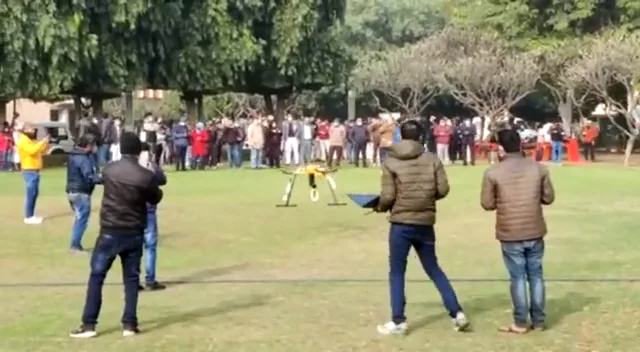
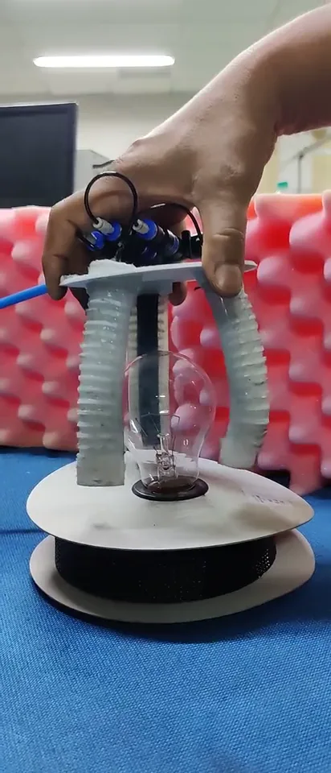
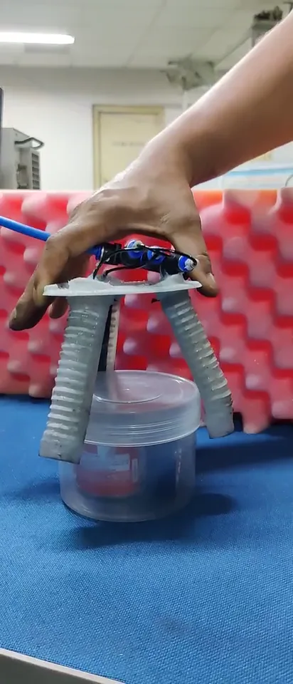

01Integration
Arm, gripper and air on one frame
An H-frame quadrotor carries a two-link arm under its body and the gripper at the arm’s end. A small cabinet holds the valves, pressure sensor and controller; two PET-bottle chambers store the air.
Soft roboticsAerial robotics2022Indo–Korea Joint Network Centre
A quadrotor with a two-link arm and a three-finger pneumatic soft gripper, powered by an onboard pneumatic battery, for careful delivery of light packages.

The idea
Delivering medicines or food by drone ends with a delicate moment: letting go of, or picking up, something fragile. Rigid grippers need precise positioning; soft fingers forgive small errors.
The project integrated a soft gripper, a light arm and a portable air supply into a flying platform built for autonomous waypoint missions.
My role
Toolbox
01Integration
An H-frame quadrotor carries a two-link arm under its body and the gripper at the arm’s end. A small cabinet holds the valves, pressure sensor and controller; two PET-bottle chambers store the air.
02Soft gripper
Each finger is a reinforced pneumatic bending actuator; pressurized together they wrap around an object and conform to its shape.
03Bench tests
The gripper held objects from a 30 g light bulb to an 814 g cylindrical box without damage, the range a delivery drone would need.


04Onboard pneumatics
A charged PET-bottle reservoir and valves give about twenty grasps per charge; pressure feedback holds the grip. The same two-stage idea powers the SoftEXOwalk backpack.
From C4Aerial manipulator · ASCC 2022P1US patent application
05Field demonstration
The paper reports a flight trial in which the drone picked up and dropped a packet of about 150 g while hovering. The footage here is from a public demonstration of the platform outdoors.
Connected work
D. Sarkar, A. Arora, S. Sen, S. S. S. Katta, D. Shashank, M. Rohan, S. K. Saha
13th Asian Control Conference (ASCC), Jeju, 2022
A. Arora, D. Sarkar, S. Sen
U.S. Appl. 18/604,087, pub. US 2024/0309891 A1 (2024); Indian Appl. 202311017238